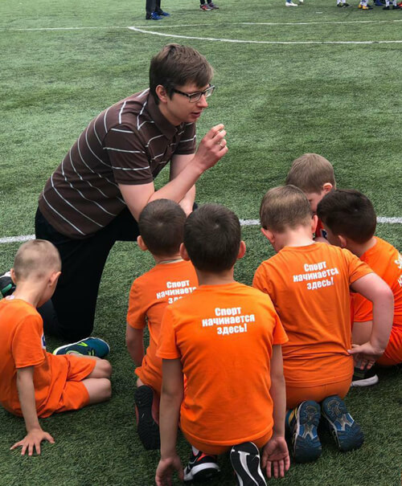

Тренировка с бамбини
Футбол по-прежнему остается одним из самых популярных видов спорта - будь то профессионалый или любительский. Недаром многие дети начинают совершенствовать свою игру еще в детстве. Для того, чтобы создать идеальную физическую форму, необходима специальная подготовка по бамбини. Дети должны обучаться с хорошо подобранными футбольными упражнениями. В дополнение к образовательным мерам существуют различные спортивные направления упражнений, чтобы обучать детей в динамичном и игривом формате. Ниже приведены некоторые важные особенности и аспекты обучения Бамбини
КАК ПРОХОДЯТ ТРЕНИРОВКИ
В школах сети «Чемпион» мы уделяем внимание всем составляющим тренировочного процесса, потому что даже небольшие детали имеют значение, когда речь идет о тренировках юных футболистов. Для того, чтобы у родителей была возможность подготовиться к занятиям, мы заранее расскажем вам о том, как они проходят.
ГЛАВНОЕ — ЭТО
ВЫЗВАТЬ ИНТЕРЕС
Самая важная задача для нас – проводить регулярные тренировки так, чтобы они нравились детям, и ребенок после каждого занятия выбегал счастливым. Для этого мы используем специальную игровую методику для детей дошкольного возраста
АВТОРСКАЯ
МЕТОДИКА
Разработкой и внедрением методики тренировок «ЧЕМПИОНА» занимаются практикующие тренеры высшей категории и сотрудники Российского государственного университета физической культуры - РГУФК
ВОЗРАСТ
Методика составлена с учетом возрастных различий и идеально подходит для детей дошкольного и школьного возраста возраста. Она ориентирована на гармоничное и всестороннее развитие ребенка: не только физическое, но и психическое — дети много общаются в группах
ПЛАН
Методики ежеквартально дополняются, проводятся вебинары с экспертами европейского уровня. Разработан план тренировок на год
ХАРАКТЕРИСТИКИ БАМБИНИ
У детей высокий уровень подвижности и игривости. Важно предоставить им игровые формы упражнений и использовать их в правильном русле. В этом возрасте мышцы не полностью развиты. Кроме того, мальчики и девочки испытывают слабое чувство координации. В связи с этим, упражнения не должны быть слишком напряженными и интенсивными. Поскольку в этом возрасте дети обычно имеют небольшой охват внимания, рекомендуется постоянное изменение упражнений. Бамбини очень сильно ориентируются на своего тренера, который представляет собой важного человека. Важно, чтобы он нес им доверие, терпение и защиту. Функция ролевой модели очень важна. Тренер не просто следит за своей ролью как таковой, но является равным педагогом, другом и товарищем по игре. Он должен нести радость, но и показывать ограничения.
КАК ДОСТИЧЬ РЕЗУЛЬТАТ
Для того, чтобы тренировка прошла более продуктивно, к ней необходимо подготовиться. Наши ученики приходят на занятия заблаговременно, переодеваются в свою тренировочную форму, после чего их встречает и тренер. Занятие начинается точно по расписанию.
Длительность тренировок подобрана для различных групп детей с учетом их возраста и согласно рекомендациям специалистов. Каждая тренировка состоит из нескольких частей: разминка, основная часть, игровая часть и заминка.
Поддержание правильного питьевого режима во время тренировок – важный элемент, способствующий снижению утомляемости и повышению работоспособности. Для этого необходимо пополнять водный баланс еще до наступления чувства жажды, для чего на тренировках в ДФК «Чемпион» в промежутках между выполнением упражнений у учеников есть небольшие паузы на то, чтобы попить воды.
Поскольку для нас важно, чтобы на тренировках каждому ребенку уделялся индивидуальный подход, на занятиях на тренера приходится не более восьми учеников. Кроме того, каждый ученик постоянно находится под присмотром тренера либо помощника, благодаря чему снижается риск получения травм, а также поддерживается должный уровень дисциплины